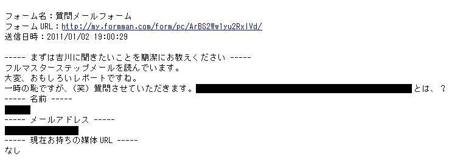
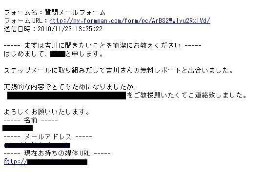

| 【再配布権利付き】ダウンロードされやすくなるための 無料レポート作成マニュアル: 手軽に作成できる無料レポート作成マニュアル | |
| 吉川旭 | |
| UNKNOWN (2019) | |
【再配布権付き】
対象者全アフィリエイター 無料レポートスタンドにて新着 1位を2度獲得 した男が贈る 初心者でもＤＬされ反応が出る 無料レポート作成マニュアル 【第１章～最大の肝編～】
※このレポートはいくら配って頂いても問題ありません
【推奨環境】 このレポート上に書かれている URL はクリックすることができます。もしクリックきない 場合は下記 URL より最新の AdobeReader をダウンロードしてください。（無料）http://www.adobe.co.jp/products/acrobat/readstep2.html
■ 著作権について 当レポートは、著作権法で保護されている著作物です。使用に関しましては、以下の点に
ご注意ください。
レポートの著作権は、吉川にあります。吉川の書面による事前許可なく、本レポートの一部、 または全部をインターネット上に公開すること、およびオークションサイトなどで転売する ことを禁じます。
本レポートの一部、または全部をあらゆる手段（印刷物、電子ファイル、ビデオ、ＤＶＤ、 およびその他電子メディアなど）により複製、流用および転載することを禁じます。 また、 再配布用のレポートを無料レポートスタンド等へ吉川の許可なく登録することも禁じます。
本契約は、レポートダウンロードした法人・個人（以下、甲とする）と吉川（以下、乙とす る）との間で合意した契約です。
本レポートを甲が受けとることにより、甲はこの契約は成立します。
第 2 条（第三者への公開の禁止） 本レポートに含まれる情報は、著作権法によって保護さ れています。また、本レポートの内容は、秘匿性の高い内容であり、甲はその情報を乙との 書面による事前許可を得ずにいかなる第三者にも公開することを禁じます。
第 4 条（損害賠償）甲が本契約の第 2 条の規定に違反した場合、本契約の解除に関わらず、甲は乙に対し、違約金として、違反件数と金壱萬円を乗じた価格の 10 倍の金額を支払うも
のとします。
第 5 条（その他） 当レポートに沿って実行し、期待通りの効果を得ることができず、万一
如何なる損益が生じた場合でも、乙は甲に対して責任を負わないものとする。
もくじ
はじめに .......................................................................................................... 4
第 1章............................................................................................................. 9
１．この教材で最も重要な事.................................................................... 12
この度は私「吉川」の商品をご購入頂きましてありがとうございます。 まずは、自己紹介を少しだけさせて頂きます。
本名 ：吉川、 1978年生まれ
出身 ：埼玉県出身・神奈川県在住、既婚
好きな食べ物 ：カレー、コーヒー、ポテチ
趣味 ：音楽聴くこと、バイク（今は売ってしまってないです
泣）音楽フェスによく出没します。夏の ROCK'IN JAPANから、
冬の COUNTDOWN JAPANまでこよなく愛しているので、出没注意、
春と夏は高校野球で大興奮しています（笑）
アフィリエイト歴 ： 2007年 11月に「日給 8万円」を購入し
て以来、現在も鋭く実践中
メイン媒体 ：ブログ・メルマガ・ステップメール
特記 ：現在、ステップメール・セールスページ等のライター
としても活躍中。商品販売している事業者様とお客様との架け橋 になるようなお仕事をさせて頂いています
本教材の目的
始める前に本教材の目的をお伝えします。
この教材は、無料レポートの作成に悩んでいる方・もっと良い無料レ ポートを作りたい方へむけ、私の経験を基に、継続してダウンロードされ反応を貰い 多くのファンを獲得出来る完全無敵の 無料レポートを作成する事
をメインの目的としています。この目的を自分で意識してレポートを読むのと読まないのとでは、 結果として大きく変わってきてしまいます。
というのも、私は先ほど申し上げました１位を獲らせて頂くまでは、 お恥ずかしながらアフィリエイトは「簡単に稼げる」 とか「メールマ ガジン発行すれば儲かるんでしょ」 などのようにあまりにも軽薄に考 えており、モノを売ると言う 「ビジネス」 としての視点が全くゼロで した。当時の私の思考としては、
・読者様のことを軽く見ていた
・ビジネスの視点としてのマーケティングの重要性の欠如
・短絡的な仕組みでしか実践していない
・とりあえず売れれば良いという安易な考え
と言った内容で、これが通常の店舗販売とすれば、このような考え方でモノを売る事というのはあり得ませんよね？
当然その結果、1 年経過しても全く成果も出ず、また同じ時期に始め た方達はどんどんと成果を出していき、さらには実践期間も自分より も全く短い方達に先を越される始末でした。
それもこれも、
「アフィリエイト」を完全にナメテいたからだ
と今は思います。
・片手間で月 100 万円 ・手軽に実践し月 100 万円 ・1 日 30 分で月 100 万円
このような言葉を鵜呑みにしてしまった結果です。やはり稼ぐにはそれなりの思考・プロセスがあって初めて成果が出る、 という事に気づくまで非常にモッタイナイ時間を費やしてきてしま いました。
ですので、これから頑張ろうとしているあなたには私が歩んでしまったこのような時間は過ごしてほしく無い一心です。
その為にはあなたの思考が、
てほしい
このように願っております。
本業の傍らで実践するのはとても大変でスゴイ事だと私は思います。 実際に今の私もそうです。しかしながら、金銭授受が発生する以上、 お客様からお金を頂くというプロセス があることを忘れてはいけま せん。
それを考えれば「これ位で稼げるだろう」 とか「売れれば良い」 とい う短絡的な考えは浮かばないはずです。逆に、「何とか良いモノを」 という思考が自然と出てくるはずです。
読者様を伴うアフィリエイトを実践されていくのであれば、メルマガ を読む方が存在しており、それはいずれお客様になって頂く方です。
あまりにも適当な内容で「これで売れるだろ」 という考えでは、逆に 信用が無くなってしまいます。
ですので、本気で稼ぎたいと思っているのであれば文章の向こうの 「読者」をどれだけ意識できるかがポイントとなってきます。
この教材でそんな意識を持って頂ければ本当に嬉しいですし、
また持って頂きたい為にこの教材を作成しました。
と意識を持って実践されなければ読者様には何も伝わらない事です。
ですので、この教材を読んで頂いているこの瞬間から、意識し実践す るぞ！と気合を入れて頂きたいと願っております。やっぱり、ビジネ スに限らずスポーツでも何でもそうですが、
行動しなければ始まらない まずは行動する
いろいろ試行錯誤するからこそあなたの「味」「特徴」が出ます。 まずはご自身で考えて行動してみてください。何が良くて、何がダメ なのか？読者様に何が喜ばれるのか？繰り返す事で見えてくるはず です。
それでも分からない時は吉川までご一報を。迷った時は一度相談を。
■問い合わせ a0778jp@yahoo.co.jp実績
少しだけ私の過去の実績もご紹介させて頂きます。
私は過去に
メルぞう新着ランキングにて１位を２回
獲らせて頂いて おります。これは、多くの読者様にご紹介頂いたお陰であり、本当に 感謝しております。
その時の画像がこちらです。
そして、２回目のメルぞう新着１位を獲らせて頂いたのは、
それから１年半が経過した後の冬の事でした。
その時のレポートはこちらです。
『電撃発表！検証レポートどれが良い？噂のツールの謎最
その時の画像がこちらです。
少し小さくて見ずらいですが^^;
また、その他の実績として、
mail-marketing-club
という 無料会員向けの SNS で１年間ほどメールマガジンの執筆 もさ せて頂いておりました。
まぐまぐのメルマガも配信させて頂いており、
２００９年には
４８００名の読者様のお陰で殿堂入り
もさせて頂き ました。
※今は独自配信に切り替えた為ほとんど廃刊寸前になってしまっていますが。。。
今回、本教材でお伝えさせて頂くノウハウはそのメルぞう新着ランキ ングを２回１位獲らせて頂いた時に学んだノウハウをお話させて頂 き、是非、あなたにも多くの読者の獲得をして頂きたいと願っており ます。
第 1章
１．この教材で最も重要な事
最初の章ではありますが、早い段階でこの教材と言うかいきなり、無料レポートを作成する上で最も重要な事 を言います。
「え～！最初に言われるの？そんな重要な事今言われても...」
「そんな重要な事なんてちょっと早すぎじゃないですか！？」
と思われるかもしれません。
しかし。これには訳があって最初に言わせて頂いております。
それは、非常に単純明快な理由です。
本当に重要な事だから。
です。 本当に覚えてほしいのでもう一度言います。
本当に重要な事だから。
本当に重要なので、絶対に覚えてほしいという思いと、この重要なポ イントで無料レポートを書く時に確実に実践してほしいから、この最 初の項目でいきなりお伝えさせて頂きます。
それは、これからお話する内容をそのまま実践するのとしないのとで は大きな大きな差が生まれてきます。販売者としてこんな事を言うのはあまり良くないのかもしれません。 でも、真実なのであえて言わさせて頂きます。
これからお伝えする事を実践したとしても、いきなり１本目のレポー トでドカンドカンとダウンロードされるレポートを作れる事は難し いかもしれません(特別な実績・知識があれば別ですが)。
でも、そのお伝えする内容を完璧に出来なくても最初からやるのとや らないのとでは、これも大きな大きな差となって２本目・３本目にな って確実に表れてきます。
これは私が、そのお伝えする内容を実践してきたからこそ言える事で す。私も最初は凄い無料レポートを作れたわけでは無く、むしろ多く の人と同じように「無料レポートって？」のところからスタートして います。
でも、私が無料レポートの書き方について教わり今回お伝えさせて頂 く事を取り入れてからは、メルぞう新着ランキングで１位を２回も取 らせて頂きました。
ですので、全ては積み重ね という考えをもってください。 どんなノウハウをいきなり完璧に使いこなすのは難しいです。
でも、継続して行う事で以前よりもすばらしい内容に出来上がるよう になります。そんな積み重ねが必要なら「初心者」じゃないじゃないか！と思われ てしまうかもしれません。ただ、この内容を知らないで無料レポート を書いていくのとでは、同じ時期に始めた同じ初心者の方でも確実に レポートの印象は違って見えるはずです。
「本当に実践１ヶ月の人が書いた無料レポート！？」そんな意味から教材のタイトル名に「初心者」の文字を使用させて頂 きました。
また、今回お伝えさせて頂く事と言うのは、何回も積み重ねる事でそ の手ごたえ・感覚が掴めるような内容です。その感覚がつかめてきた 時に真の「ダウンロードされ反応の出る無料レポート」 は生まれます。
だからこそ、本当に重要 なのです。
是非、頑張って感覚がつかめるようになっていきましょう^^２．初心者でもレポートの価値を一気に引き上げる 方法
これからこの章に渡ってお伝えする内容の全体感を ザックリ言うと、～～～～～～～～～～～～～～～～～～～～～～～～～～～～～～ 目的を書く
問いを投げかける
最後にしてもらいたいアクションについて
「うぉぉ～～～○○したい！！」と思ってもらえるように誘導。 「○○についてしたいと思いませんか？」などのように。
～～～～～～～～～～～～～～～～～～～～～～～～～～～～～～
これを見る限りでは、どういうように書いていくか？があまり分かり ませんよね？^^;
たぶん「最後に重要な事をもっていくのね」と思われているかもしれ ません。
でも、実際やる事としては違います。
見た目はこんな全体感でも、実はもっと重要なポイントが潜んでいま す。それが 本当に重要な事 です。
それは先ほどご紹介しました、
『フルマスターステップメール「Automatic!」』
の中に全て取り入れています。
これからその本当に 重要な事について全て お話します。
正直言いまして、これが理解でき実践出来れば、無料レポートを書く ことに慣れていない方でもダウンロードされ反応が出る無料レポー トを書くことは出来る ようになります。
何度もしつこいようで申し訳ないですが、実際に私の「フルマスター ステップメール Automatic」はレポート発表後も継続的にダウンロー ド頂き、かつ、このレポート内にその重要なポイントを仕込んだ事で、 非常に多くの質問メールを頂いております。
その多く頂いている質問メールのごく一部がこれです。
こちらとか。 さらにこんな感じで。
 さらには、
と、さすがに毎日ではありませんが、まだまだ途切れることなく多く 頂いています。
あなたもしっかりと取り入れられるようになると、このように無料レ ポートからの反応がガンガン届くようになります。
一字一句読み逃す事のないよう 特に真剣にお読みください。
必要であればメモを取るようにしていつでも手元で見れるようにし ておいてください。その本当に重要な事についてお話したいと思います。 肝の部分です。
それは ↓
↓
↓
↓
まずは、
作るレポートの一番言いたい ポイントを明確にする
ことです。それは、実績が出るようになったノウハウであれば その肝心なノウハウの中心分。何かの検証結果のレポートであれば、 その考察の重要な部分。
あなたが最も伝えたいポイント。食事で例えるとメインディッシュです。
まずは、この部分が何なのか？を自分の中で明確にしておきます。
次に、その一番言いたいポイントをレポートに書く前に、 読者の注意をひくような流れを引いていきます。 それは、このように、
言葉
を大きくするのでも良いですし、あるいは、
と、画像でとにかく注目するようにします。
基本的に、一字一句全て真剣にレポートを読んで頂くのは不可能です。
これを 「フック」 と言います。
セールスレターを作る際によく使用されるテクニックの事です。
コピーライティングのテクニックにもなりますが、これを無料レポー トでも取り入れていきます。
私のレポートの例で言いますと、フルマスターステップメール Automatic では、
今から非常に大事な お話しをします
と、読者の皆さんに「これから重要な話を始めます」というアピール をし、そこから改めて真剣に読んで頂く旨を示しました。また、実はこの教材でも使っています。１６ページの大きい赤文字の 箇所 です。「これからその本当に重要な事について全てお話します」 の箇所です。
このように、あなたが言いたい事について発表する直前まで、「これから最も重要なノウハウのポイントについてお伝えします」
というような流れで読者を惹き付けます。
これによって、もともとそのレポートに興味あって読んで頂いている 読者がさらに注意深く読んで頂く環境を作ることになります。
さて、ここからがもう一つの重要なポイント。
さらに重要な事 です。
あなたはこの教材で「反応が出るような無料レポート」 を作りたいと 思っているはずです。だから、最後に反応を貰う仕組みは絶対にしてください。
「質問メールフォーム」 「メルマガ登録」 「商品販売」
それぞれ読者にしてもらいたい反応はあると思いますが、 あなたが目的とする反応をもらえる仕組みを最後に入れます。ここからもポイントです。その反応を貰う為に、あなたが最終的に 言いたい事は言わず にその仕組みに読者の注意をもっていきます。 あ、今さらっと言ってしまったのでもう一度^^;
あなたが最終的に言いたい事は 言わない
なぜなら、反応を貰いたいからです。
最終的にあなたが言いたい事、そのポイントについてググググ～と迫 るような誘導をしていきます。
誘導と言うのは、ノウハウなどの文章の中で「核心については後ほど 最後に説明しますので最後までお読みください」や、「質問してくだ さい」という表現で誘導します。
その誘導がある事でレポートを読んでいる読者様は、「早く言えよ！」
と思いつつも（笑）
そのあなたが言いたい事が気になり始めます。
そこで初めてスタートラインに立てるようになります。反応を貰うというゴール へのスタートラインです。
そこから、どんどん、どんどんどんどんと最終に向け、 心では、(出すぞ出すぞ)とチラ見せしながら文章を書いていきます。 （どうでもイイですがチラ見せって良い言葉です（笑））
この辺の書き方、誘導の仕方というのはいきなりやろうとしても難し
いと思うので、実際に「フルマスターステップメール Automatic」で
書いた文章で考えてみましょう。
↓
↓
↓
↓
↓
ここはメルマガでも応用が利く部分なので、プリントアウト してでも暗記する位読んでください。
そして、必ず「実行してください！」 ね(^^)
良いですか？
ステップメールと言うのは、メルマガと比べて質問が貰いやすい 状態を作り出すことが出来ます。
とにかく全力で質問メールを貰う事に力を注ぎます。
ステップメールにおいての常に気を付ける事はここです。 読者(見込み客と)常にコンタクトが取れる状態を築きます。
配信される毎回の記事の中に、とにかくここを気にしながら 配信していきます。そして、一人当たりから貰えるメールの回数を 増やしていきます。これだけです。
読者の取り込みは自動で出来ますが、この質問メールの返信に関しては全て手作業で行ってください。
ここが面倒くさいというのであれば、ステップメールで
モノを売っていくという事は諦めた方が良いでしょう。
継続して収入を得るには「購入者を顧客化」することが不可欠です。
その為の関係を築くという作業と思ってください。 もちろん質問メールには全力で答えてあげなければいけませんよ (^^;)
では、その質問メールをどうやって貰いやすくするのか？ ということについて。具体的に言うと、「質問メールをください」と誘導してあげる事 です。
メルマガでもそうですが、何もアクションを呼んでいない人が、 かなり多いです。ふつ～に記事書いて、ふつ～に終わっている。 これでは質問メールは来ません。
さらに具体的に言うと、「質問はここから→メールフォーム」、 というのならまだ良い方ですね。これが無いよりかは。今から非常に大事なお 話しをします
非常に大事な点です。このレポートの中で一番大事なポイントです。
先ほど 60 ページでもお伝えしましたが、他の情報をシャットダウン してよ～く読んでくださいね。
ここが理解できるかどうかで売り上げが別物になりますから。 実際、私がそうでしたので。
売れるアフィリエイターになるか？このまま消えていくアフィリエイターになるか？
まさに稼ぎの境界線となるポイントです。
本当に皆さん「誘導をしてあげる」 ということをやっていません。
シナリオを作る際は、全ての配信時においてまずここを 最初に考えてください。
その誘導があって初めて読者さんは
「あ、ちょっと質問してみようかな～」 って気になり始めるんですね。
いいです？
ここから始まるんですよ。
「質問をするかどうかを迷いだす」
誘導文があることでスタートラインです。 質問が来るのではなく、「スタートライン」です。
この意味わかるでしょうか？
質問メールを貰いやすくする方法と言いましたが、
ここで初めて質問するかを迷いだすんです。
ちなみに、実際に私がスタートラインを引いて、 その後質問メールが来た記事がこちら。 ここから始まりです。
2009 年 04 月 13 日「ステップメールの唯一無二の特典」 ⇒ http://merumaga-blog.doorblog.jp/archives/1178862.html最後に誘導してますよね？しっかりと。
この日が「質問しようかな？」というスタートライン。 で、この次も。
やってますね～質問の誘導。
気になる人はそろそろ焦らしだします。 で、次の日がこれ。
ついに来ました。質問が。
もちろんこの時のＴさんには個別にお教えしましたが、 ブログでは書かずに再度繰り返し誘導してます。
この一連の流れが質問をもらうという手法。
でも、正直なところたったこれだけの記事ですが、実はいろんな 考えに基づいて誘導しているんです。
本当にこれこそ一番重要な肝の部分。
このブログ記事内の質問誘導の中に最も重要なポイントを詰め込ん
でいます。
誘導することは大事だけど基本中の基本。
その誘導をした上で、プラス意識すると言うか考えるべき点がありま す。
もう一度言いますね。
誘導をした上でプラス意識すると言うか考えるべき点ただ誘導するのではなくて、あることを 考えてしっかりと誘導するこ と。苦労しましたよ。ここが理解できて、自分の中にスッと入ってく るまで。
何べんも「これじゃダメです！」「まだ意味が分かりません」と ダメ出しをされながら、試行錯誤しました。このレポートでも、ここまでそのヒントとなることも書いてきました。 おそらく気付く人にはすぐモノに出来るでしょう。
それ位のコンテンツには仕上げました。このレポートを。
しかし、やはり意味が分からないと言う方もおそらくいるでしょう。 ですので、もしこのレポートを読んでもその、
誘導をした上でプラス意識すると言うか考えるべき点
が、ちょっと分からないと言う方、
今度は個別にて対応致しますので、是非メールを頂ければと思います。 さすがに、私が費用と時間をかけた全部はこのレポートでお教えする ことは、コンテンツの性質上難しいです。
このレポートも真剣に読んで頂いている方と言うのも少ないでしょ う。それが一番悲しいです。例え誰も知らないようなことを書いたと しても。くまなく長時間集中して真剣に読むと言う事は物理的に難し いです。
ですので、その自分の持っているモノを伝えきるには
やっぱり個別対応以外に有効な手段は無いと思っています。 もしかしたらメールをする事が面倒くさい・恥ずかしいと 思う方もおられるでしょうね。でもね、ちょっと考えてみてください。
と良く言ったものです。
ここで聞けるかどうかで、稼ぎの境界線を越えられるのなら、 私なら喜んで恥をさらします。
実際に今までそうしてきました。
実践期間も私よりはるかに少ない方で稼ぐようになられた方に、
「○○さんならここの説明どうします？」 「ブログのここの所おかしいでしょうか？」
などと質問してきました。
稼ぎの境界線を越えたい方、
誘導する際の最も意識しなくてはいけない点を知りたいと言う方、
↓質問メールはこちらからです↓ http://builderyoshi.com/a/cygu
～～～～～ここまでです～～～～～～～～～～～～～～～～～～～ ～～～～～ここまでです～～～～～～～～～～～～～～～～～～～いかがでしょうか。 質問したくなってますでしょうか？
まず、「メールをもらいましょう」 と言います。 ただ待っているだけでは誰も振り向いてくれないので、 さらには「誘導しましょう」 とも言います。
また、そのフルマスターステップメール Automatic 内では～～～～～～～～～～～～～～～～～～～～～～～～～～～～～～ 先ほど
60ページでもお伝えしましたが、他の情報をシャットダウン してよ～く読んでくださいね。
～～～～～～～～～～～～～～～～～～～～～～～～～～～～～～
と言う表現で、ここから本当に読んでほしい事を強調しています。
でも、普通に誘導しているだけではそこまで反応がガンガン出来る事 は出来ません。読者様はようやく「質問しようかな～」と迷い出すの で。
そこで、その迷いを後押しする為に「誘導はしつつもプラスして意識 する事がある」 と質問メールに向かって誘導しました。 引っ張りアクションを起こしてもらう。その結果が、
こちらとか。
さらにこんな感じで。
という事でした。
私は、今でこそこうして書いていますが、当時は特にコピーライティ ングについて専門的に学んだ訳ではありません。フックと言いました が、そんな専門用語について・その使い方について徹底的に学んだ訳 でもありません。むしろフックと言う言葉を使うほどフックの事を完 璧に理解している訳でもありません。
ただ、それなりに師匠にダメ出しを受けながらも、これは素人なりに 努力した結果です。この結果がメルぞう新着１位を獲らせて頂いた要因の一つであると 思います。
モノでは無いのですが、やはり見るのとやるのでは大きな違いで意外 に反応がでないモノでもあります。
行動しなければ始まらない まずは行動する
と申し上げさせて頂きました。何度も実践してみて反応を得てみて修正していく事で、次の一本が精 度の高い無料レポートへと変化していきます。自分の糧となっていき ます。
ですから、いきなり出来ないよ、と嘆くのは止めて 「まずはやってみて」ください^^
第一章でいきなり、この教材の核心部分を書いてしまいました。 これは最初にも言いましたが、あえて書いてます。
この核心部分を起点として無料レポートの構成を考えてほしい からです。最後にすごい事を思い付いたとしても、急に内容を改編していくのは 非常に時間がかかってしまいます。
ですので、最初に核心部分を考えてそこに向かってレポートを書いて いく方が、まとまったレポートにもなりますし、何が言いたいのか？ というのが明確になります。
何も考察も無しに「やりました！」的な結果だけをポンっと出すので あればこういう核心はいらないでしょうが、継続してダウンロードを して貰えるような、さらにはその都度反応を貰えるようなレポートを 作っていくのであれば、こうした視点は必ず必要になります。
だからと言って、「よぉ～し！この内容が肝なのね！早速書くぞ！」
とならないでくださいね^^
確かに肝の部分を最初にお話ししましたが、
この肝と言うのは付属のモノがあって初めて成り立つもの
です。
木の幹もそうですよね？
全てが枯れ切った幹の部分だけあっても枝や葉っぱが無ければ、 木全体としての本当の姿というのは見えません。
その前の話があるからこそ肝の部分が引き立ちます。
逆に肝の部分しかないと、重要なモノも重要さは全く伝わりません。
ですので、あと残りの ２章 ・ ３章 では無料レポートの作成方法の 「基本編」 と 「実践編」 も私の持っている知識をフル動員して精一杯 作らせて頂きました。
しっかりと肝の部分が引き立つような構成になるような作り方、 私がこれまで５０本以上作って来た経験から学んだ作り方、 そんな部分を基本編と実践編へ盛り込みました。そこで！
今この第 1 章を読んで頂いているあなただけへご提案です。第 2 章、第 3 章を希望する方には差し上げたい
と思います！この第 1 章と同様に力とノウハウを込めて作成したレポートです。 その概要は以下となっています。
第 2 章：レポート作成ノウハウ基本編
多くのダウンロードをして貰う為には？
無料レポートを使う目的の本質
実績が無い時の無料レポートの作り方
少しでも良いから実績が出てきた時の無料レポートの作り方 無料レポートを読みやすい物にする方法とは？
第 3 章：レポート作成ノウハウ実践編
リサーチの重要性
具体的なレポートの構成を考える
レポートで読者をコントロールするとは？
レポートの最後に必ず入れなければいけない事とは？
魅力的なタイトル、ダウンロードされやすいタイトルの付け方とは？ 無料レポートを作った後にも気を付けなければいけない点 オススメのメールフォーム
ネタに困った時のレポート作成方法
レポートの紹介文の書き方
たら、コピーライティング基礎講座でお配りしています！
↓
レポートも欲しいのでコピーライティングを学び ます！
最後までお読み頂きまして ありがとうございました！
■ブログ
ステップメール販売のスペシャリストブロメガクリエイター倶楽部
a0778jp@yahoo.co.jp ■運営者